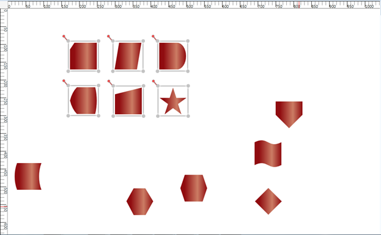

From version 10.1.0.44, Essential Diagram for WPF enables you to apply the table layout on selected nodes instead of applying it to the entire diagram. This arranges selected nodes or a given node collection in a tabular structure based on specified intervals between them. The number of nodes in each row and column can be specified and the layout will be applied accordingly.
Use Case Scenarios
· Users can easily make the layout with a specific collection of nodes called ordered nodes.
· Users can easily position the layout.
· Users can easily align the layout by using the layout alignment properties.
· Users can set a rectangle boundary around nodes by using the Layout Bounds property.
Properties
|
Property |
Description |
Type |
Data Type |
|
OrderedNodes |
This property is used to get or set the Collection of Nodes for table layout. |
Dependency property
|
List<IShape> |
Sample Link
To view a sample of this feature:
1. Open Dashboard.
2. Click User Interface > WFP.
3. Click Run Samples.
4. Navigate to Diagram > Automatic Layout > Table Layout.
Adding Table Layout for selected Nodes
To apply a table layout to the selected nodes, assign the selected nodes to the OrderNodes property of the DiagramModel. You can also assign your own collection of IShape to the OrderNodes property. Then create an instance of the TableLayout and call the RefreshLayout method for this instance.
The following code illustrates this:
|
[C#]
// Assigning selected node to the OrderedNodes property. diagramModel.OrderedNodes= diagramView.SelectionList.OfType<IShape>().ToList(); // Create an instance of TableLayout and refresh it. TableLayout table = new TableLayout(diagramModel, diagramView); table.RefreshLayout();
|
|
[VB]
'Assigning selected node to the OrderedNodes property. diagramModel.OrderedNodes= diagramView.SelectionList.OfType(Of IShape)().ToList() 'Create an instance of TableLayout and refresh it. Dim table As New TableLayout(diagramModel, diagramView) table.RefreshLayout()
|
When the code runs, the table layout will be applied to the specified node collection.
Note: If the OrderNodes property is set to null, then the table layout will be applied to the entire diagram.

Figure 140: Table Layout Applied for Specified Nodes
Aligning the Layout on a Specified Location
To align the ordered nodes in a particular position, call the TableLayout’s RefreshLayout (Point PivotPoint) method and specify the particular point as a parameter. The layout will be positioned in the specified pivot point.
The following code illustrates this:
|
[C#]
// Assigning selected node to the OrderedNodes. diagramModel.OrderedNodes= diagramView.SelectionList.OfType<IShape>().ToList(); TableLayout table = new TableLayout(diagramModel, diagramView); table.RefreshLayout(300,400);
|
|
[VB] ' Assigning selected node to the OrderedNodes. diagramModel.OrderedNodes= diagramView.SelectionList.OfType(Of IShape)().ToList() Dim table As New TableLayout(diagramModel, diagramView) table.RefreshLayout(300,400)
|
Removing Table Layout from the Specific Nodes
You can remove the table layout applied to specific nodes. To achieve this set the OrderedNodes property of the DiagramMode to null, and call the RefreshLayout method of the TableLayout. The layout will be applied to the entire diagram. By default the OrderedNodes property is set to null.
The following code illustrates how to remove the layout from the specific nodes:
|
[C#]
// Set null value to the OrderedNodes property. diagramModel.OrderedNodes = null; TableLayout table = new TableLayout(diagramModel, diagramView); table.RefreshLayout(300,400);
|
|
[VB] ' Set null value to the OrderedNodes property. diagramModel.OrderedNodes = Nothing Dim table As New TableLayout(diagramModel, diagramView) table.RefreshLayout(300,400)
|